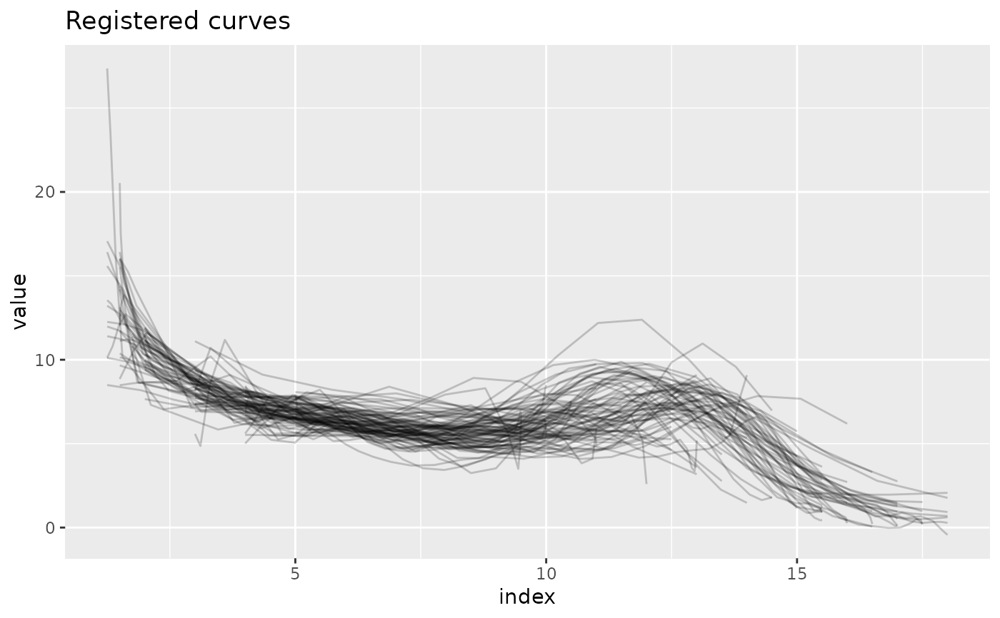
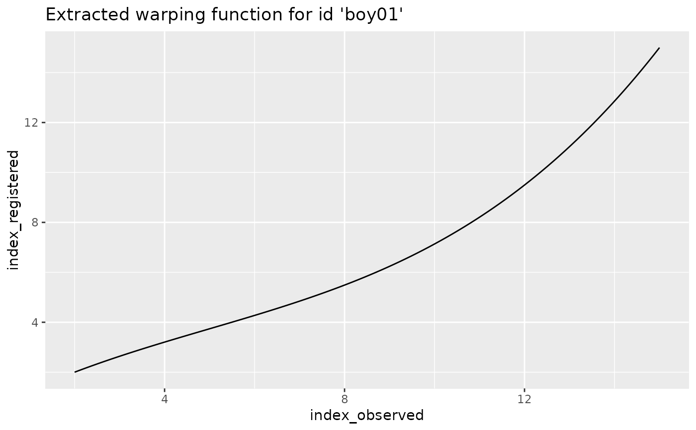
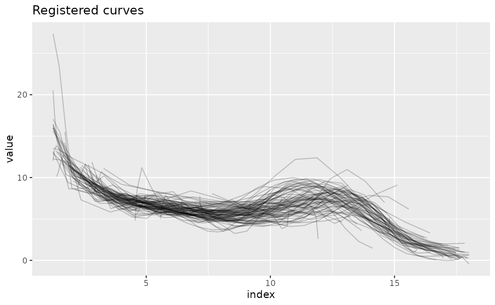
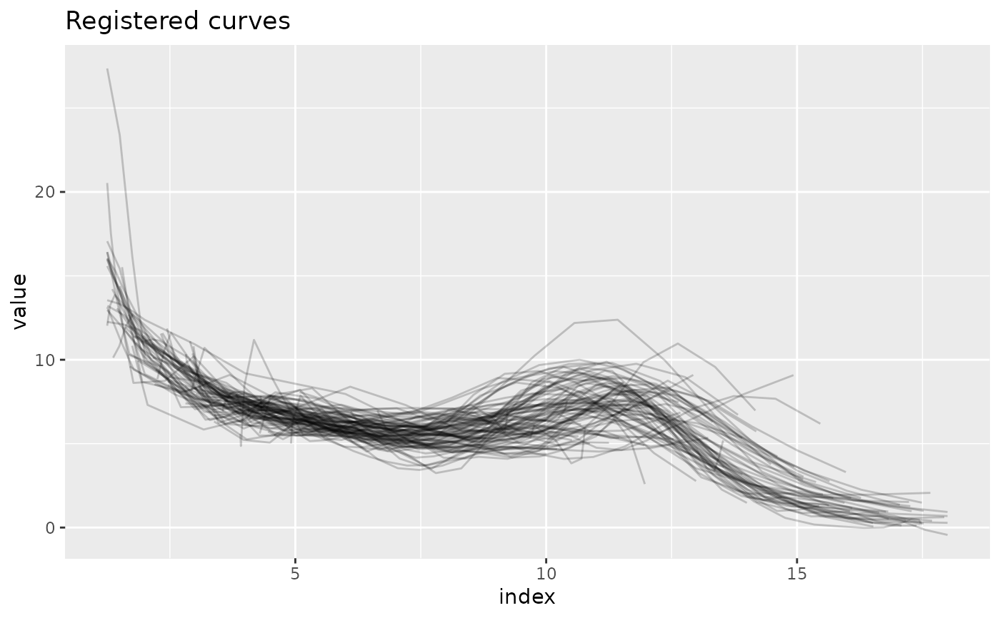

registr.RdSoftware for registering functional data from the exponential family of distributions.
Function used in the registration step of an FPCA-based approach for
registering exponential-family, potentially incomplete functional data,
called by register_fpca.
This method uses constrained optimization to estimate spline
coefficients for warping functions, where the objective function for optimization comes from
maximizing the EF likelihood subject to monotonicity constraints on the warping functions.
You have to either specify obj, which is a fpca
object from an earlier step, or Y, a dataframe in long format with variables
id, index, and value to indicate subject IDs, times, and observations,
respectively.
Warping functions by default are forced to start and end on the diagonal to be
domain-preserving. This behavior can be changed by setting
incompleteness to some other value than NULL and a reasonable lambda_inc value.
For further details see the accompanying vignette.
By specifying cores > 1 the registration call can be parallelized.
registr(
obj = NULL,
Y = NULL,
Kt = 8,
Kh = 4,
family = "gaussian",
gradient = TRUE,
incompleteness = NULL,
lambda_inc = NULL,
Y_template = NULL,
beta = NULL,
t_min = NULL,
t_max = NULL,
row_obj = NULL,
periodic = FALSE,
warping = "nonparametric",
gamma_scales = NULL,
cores = 1L,
subsample = TRUE,
verbose = 1,
...
)| obj | Current estimate of FPC object. Can be NULL only if Y argument is selected. |
|---|---|
| Y | Dataframe. Should have values id, value, index. |
| Kt | Number of B-spline basis functions used to estimate mean functions. Default is 8. |
| Kh | Number of B-spline basis functions used to estimate warping functions h. Default is 4. |
| family | One of |
| gradient | If |
| incompleteness | Optional specification of incompleteness structure.
One of |
| lambda_inc | Penalization parameter to control the amount of
overall dilation of the domain.
The higher this lambda, the more the registered domains are forced to have the
same length as the observed domains.
Only used if |
| Y_template | Optional dataframe with the same structure as |
| beta | Current estimates for beta for each subject. Default is NULL. |
| t_min | Minimum value to be evaluated on the time domain. if `NULL`, taken to be minimum observed value. |
| t_max | Maximum value to be evaluated on the time domain. if `NULL`, taken to be maximum observed value. |
| row_obj | If NULL, the function cleans the data and calculates row indices.
Keep this NULL if you are using standalone |
| periodic | If |
| warping | If |
| gamma_scales | Only used for |
| cores | Number of cores to be used. If |
| subsample | if the number of rows of the data is greater than 10 million rows, the `id` values are subsampled to get the mean coefficients. |
| verbose | Can be set to integers between 0 and 4 to control the level of detail of the printed diagnostic messages. Higher numbers lead to more detailed messages. Defaults to 1. |
| ... | additional arguments passed to or from other functions |
An list containing:
The observed data. The variables index and index_scaled
contain the new estimated time domain.
Value of the loss function after registraton.
List of inner knots for setting up the spline bases
for the inverse warping functions. Only contains NULL values for
Kh <= 4.
Matrix of B-spline basis coefficients used to construct
subject-specific inverse warping functions. See examples on how to
reconstruct a warping function based on hinv_innerKnots and
hinv_beta.
The template function for the registration is defined by argument obj
or Y_template, depending on if obj is NULL or not, respectively.
Julia Wrobel
Julia Wrobel julia.wrobel@cuanschutz.edu, Erin McDonnell eim2117@cumc.columbia.edu, Alexander Bauer alexander.bauer@stat.uni-muenchen.de
### complete binomial curves
Y = simulate_unregistered_curves()
register_step = registr(obj = NULL, Y = Y, Kt = 6, Kh = 4, family = "binomial",
gradient = TRUE)
# \donttest{
### incomplete Gaussian curves
data(growth_incomplete)
# Force the warping functions to start and end on the diagonal to preserve the domain
register_step2a = registr(obj = NULL, Y = growth_incomplete, Kt = 6, Kh = 4,
family = "gaussian", gradient = TRUE,
incompleteness = NULL)
if (requireNamespace("ggplot2", quietly = TRUE)) {
library(ggplot2)
ggplot(register_step2a$Y, aes(x = tstar, y = index, group = id)) +
geom_line(alpha = 0.2) +
ggtitle("Estimated warping functions")
ggplot(register_step2a$Y, aes(x = index, y = value, group = id)) +
geom_line(alpha = 0.2) +
ggtitle("Registered curves")
}

# Example for how to recreate an estimated inverse warping function given
# the output of registr(). Focus on id "boy01".
id = "boy01"
index_obsRange_i = range(growth_incomplete$index[growth_incomplete$id == id])
index = seq(min(index_obsRange_i), max(index_obsRange_i), length.out = 100)
# (note that 'index' must contain both the observed min and max in index_obsRange_i)
Theta_h_i = splines::bs(index, knots = register_step2a$hinv_innerKnots[[id]], intercept = TRUE)
index_reg = as.vector(Theta_h_i %*% register_step2a$hinv_beta[,id])
warp_dat_i = data.frame(index_observed = index,
index_registered = index_reg)
if (requireNamespace("ggplot2", quietly = TRUE)) {
ggplot(warp_dat_i, aes(x = index_observed, y = index_registered)) + geom_line() +
ggtitle("Extracted warping function for id 'boy01'")
}

# Allow the warping functions to not start / end on the diagonal.
# The higher lambda_inc, the more the starting points and endpoints are
# forced towards the diagonal.
register_step2b = registr(obj = NULL, Y = growth_incomplete, Kt = 6, Kh = 4,
family = "gaussian", gradient = TRUE,
incompleteness = "full", lambda_inc = 1)
if (requireNamespace("ggplot2", quietly = TRUE)) {
ggplot(register_step2b$Y, aes(x = tstar, y = index, group = id)) +
geom_line(alpha = 0.2) +
ggtitle("Estimated warping functions")
ggplot(register_step2b$Y, aes(x = index, y = value, group = id)) +
geom_line(alpha = 0.2) +
ggtitle("Registered curves")
}

# Define the template function only over a subset of the curves
# (even though not very reasonable in this example)
template_ids = c("girl12","girl13","girl14")
Y_template = growth_incomplete[growth_incomplete$id %in% template_ids,]
register_step2c = registr(obj = NULL, Y = growth_incomplete, Kt = 6, Kh = 4,
family = "gaussian", gradient = TRUE,
Y_template = Y_template,
incompleteness = "full", lambda_inc = 1)
if (requireNamespace("ggplot2", quietly = TRUE)) {
ggplot(register_step2c$Y, aes(x = index, y = value, group = id)) +
geom_line(alpha = 0.2) +
ggtitle("Registered curves")
}

# }